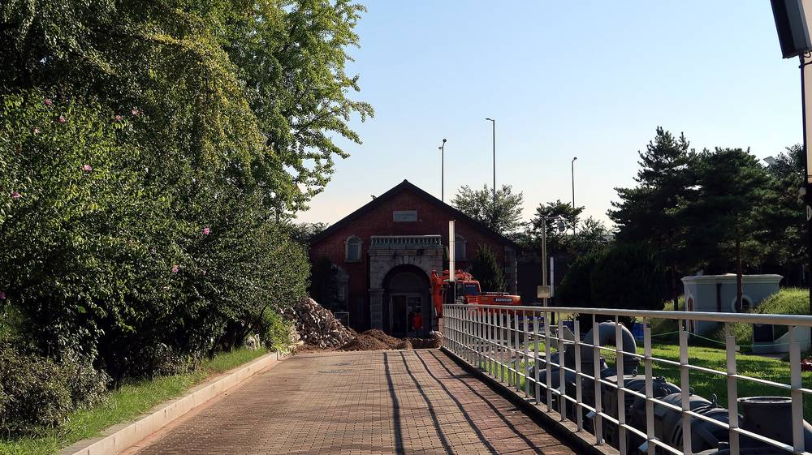

서울 수돗물 만드는 데 전기요금 891억 원…아리수본부 재생에너지 조달 1.3%, 온실가스 감축은 목표 미달

목소영 서울시의원 행정사무감사 지적…전력 90%는 정수센터 펌프, 고효율 인버터는 4곳뿐, 내년 배출권 구매비 약 2억5,000만 원 전망
서울 수돗물 아리수를 만들고 보내는 데 한 해 약 891억 원의 전기요금이 드는데도 서울아리수본부의 재생에너지 조달 비율은 1.3%에 머물고 온실가스 감축도 목표에 못 미친다는 지적이 서울시의회 행정사무감사에서 나왔다. 목소영 서울시의원(더불어민주당·성북2)은 4일 제340회 정례회 아리수본부 행정사무감사에서 온실가스 감축 실적과 에너지 효율화 현황을 따졌다. 목 의원이 받은 자료에 따르면 아리수본부는 2005년 대비 2030년까지 온실가스를 12% 줄이는 목표를 세웠지만 최근 3년간 목표를 넘긴 배출량이 3.5배로 늘었고, 2025년 감축 실적은 목표 대비 -13.3%로 정수센터 6곳과 수도사업소 7곳이 모두 목표를 채우지 못했다. 전력의 약 90%는 정수센터 펌프가 쓰는데 취수펌프 57대가 31.95%, 송수펌프 68대가 46.85%, 중계펌프 42대가 11.6%를 차지하며, 고효율 인버터 제어 설비는 비중이 가장 작은 중계펌프 쪽 4곳에만 설치돼 있고, 배출권 보유분이 바닥나 2025년 약 1,800만 원어치를 더 샀으며 2026년에는 초과 배출 약 2만5,000톤에 구매비가 약 2억5,000만 원으로 늘 것으로 전망됐다. 목 의원은 "2030년까지 재생에너지 조달 비율을 10%로 높이겠다는 목표도 중요하지만, 구체적인 투자계획과 이행 성과가 뒷받침돼야 한다"며 서울물연구원 연구를 실제 설비 개선으로 잇고 공정별 에너지관리시스템(EMS)을 갖추며, 인버터 도입이 어렵다면 재생에너지 확대 같은 실질 대책을 내놓으라고 요구했다. 아리수본부의 답변은 알려지지 않았다.
시민에너지 관점
한 해 전기요금이 891억 원인 공공기관이 재생에너지를 1.3%만 조달한다는 것은, 시민의 물값과 세금으로 막대한 전력을 쓰는 공공기관이 아직 에너지 전환의 바깥에 서 있다는 뜻이다. 수돗물 공급의 안정이 먼저라 설비 교체나 재생에너지 투자를 서두르기 어렵다는 반론이 있을 수 있지만, 배출권 구매비가 한 해 만에 약 1,800만 원에서 약 2억5,000만 원으로 커질 전망이라면 미루는 쪽이 오히려 시민 부담을 키운다. 독일의 도시 공기업(슈타트베르케)들이 지역 에너지협동조합과 손잡고 시민 출자 발전소를 함께 짓는 것처럼, 공공시설의 재생에너지 조달도 시민이 투자하고 수익을 나누는 방식으로 채울 수 있다. 서울시와 아리수본부는 2030년 10% 목표를 해마다 얼마씩 어떤 방식으로 채울지 투자계획을 공개하고, 그 과정에 시민 참여 몫을 열어야 한다.
출처: 서울뉴스통신 2026-11-05 이민희 원문 보기
ソウルの水道水づくりに電気料金891億ウォン…アリス本部の再エネ調達1.3%、温室効果ガス削減は目標未達
モク・ソヨン・ソウル市議が行政事務監査で指摘…電力の90%は浄水センターのポンプ、高効率インバーターは4カ所のみ、来年の排出権購入費は約2億5,000万ウォンの見通し
ソウルの水道水「アリス」をつくり送るために年間約891億ウォンの電気料金がかかっているにもかかわらず、ソウル・アリス本部の再生可能エネルギー調達比率は1.3%にとどまり、温室効果ガスの削減も目標に届いていないとの指摘が、ソウル市議会の行政事務監査で出た。モク・ソヨン・ソウル市議（共に民主党・城北2）は4日、第340回定例会のアリス本部行政事務監査で、温室効果ガスの削減実績とエネルギー効率化の状況をただした。モク議員が受け取った資料によると、アリス本部は2005年比で2030年までに温室効果ガスを12%減らす目標を掲げているが、直近3年間で目標を超えた排出量は3.5倍に増え、2025年の削減実績は目標比マイナス13.3%で、浄水センター6カ所と水道事業所7カ所のすべてが目標を達成できなかった。電力の約90%は浄水センターのポンプが使い、取水ポンプ57台が31.95%、送水ポンプ68台が46.85%、中継ポンプ42台が11.6%を占めるが、高効率インバーター制御設備は比重が最も小さい中継ポンプ側の4カ所にしかなく、排出権の保有分が尽きたため2025年に約1,800万ウォン分を追加購入し、2026年には超過排出が約2万5,000トン、購入費が約2億5,000万ウォンに膨らむ見通しだ。モク議員は、2030年までに再エネ調達比率を10%に高める目標も重要だが、具体的な投資計画と実行の成果が伴わなければならないとし、ソウル水研究院の研究を実際の設備改善につなげ、工程別のエネルギー管理システム（EMS）を整え、インバーター導入が難しいなら再エネ拡大のような実質的な対策を示すよう求めた。アリス本部の答弁は伝えられていない。
市民エネルギーの視点
年間の電気料金が891億ウォンに上る公共機関が再生可能エネルギーを1.3%しか調達していないのは、市民の水道料金と税金で莫大な電力を使う公共機関が、いまだにエネルギー転換の外側にいることを意味する。水道水の安定供給が先で設備更新や再エネ投資を急ぐのは難しいとの反論もありうるが、排出権の購入費が1年で約1,800万ウォンから約2億5,000万ウォンに膨らむ見通しなら、先送りするほうがかえって市民の負担を大きくする。ドイツの都市公社（シュタットヴェルケ）が地域のエネルギー協同組合と組んで市民出資の発電所を共に建てているように、公共施設の再エネ調達も市民が投資し収益を分かち合う方式で満たすことができる。ソウル市とアリス本部は、2030年の10%目標を毎年どれだけ、どのような方式で満たすのか投資計画を公表し、その過程に市民参加の枠を開くべきだ。
出典: ソウルニュース通信 2026-11-05 イ・ミンヒ 原文を読む
首尔生产自来水电费达891亿韩元…Arisu本部可再生能源采购仅1.3%，温室气体减排未达标
首尔市议员睦昭英在行政事务监查中指出…90%电力用于净水中心水泵，高效变频器仅装4处，明年排放权购买费用预计约2亿5,000万韩元
首尔市议会行政事务监查中有人指出，首尔生产和输送自来水"Arisu"每年要花约891亿韩元电费，但首尔Arisu本部的可再生能源采购比例仅为1.3%，温室气体减排也未达到目标。首尔市议员睦昭英（共同民主党·城北第2选区）4日在第340届定例会Arisu本部行政事务监查中，追问了温室气体减排实绩和能效提升情况。根据睦议员获得的资料，Arisu本部定下了到2030年比2005年减少12%温室气体的目标，但近3年超出目标的排放量增至3.5倍，2025年减排实绩比目标低13.3%，6个净水中心和7个供水事业所全部未能达标。约90%的电力由净水中心的水泵消耗，其中57台取水泵占31.95%、68台送水泵占46.85%、42台中继泵占11.6%，而高效变频控制设备只装在占比最小的中继泵一侧4处；由于持有的排放权已经用完，2025年又追加购买了约1,800万韩元的排放权，预计2026年超额排放约2万5,000吨，购买费用将增至约2亿5,000万韩元。睦议员表示，到2030年把可再生能源采购比例提高到10%的目标固然重要，但必须有具体的投资计划和执行成果作支撑，并要求把首尔水研究院的研究成果落实到设备改进上，建立分工序的能源管理系统（EMS），若难以引进变频器，就应拿出扩大可再生能源等实质性对策。Arisu本部的答复未见报道。
市民能源视角
每年电费高达891亿韩元的公共机构只采购1.3%的可再生能源，意味着用市民的水费和税金消耗大量电力的公共机构仍站在能源转型之外。有人可能反驳说自来水稳定供应优先，难以急于更换设备或投资可再生能源，但如果排放权购买费用预计在一年内从约1,800万韩元增至约2亿5,000万韩元，拖延反而会加重市民负担。正如德国的城市公用事业公司（Stadtwerke）与地方能源合作社携手共建市民出资电站一样，公共设施的可再生能源采购也可以通过市民投资、分享收益的方式来补足。首尔市和Arisu本部应公开投资计划，说明2030年10%的目标每年以何种方式完成多少，并在这一过程中为市民参与留出份额。
来源: 首尔新闻通信（SNA Korea） 2026-11-05 李敏熙 查看原文
Seoul spends 89.1 billion won a year on electricity to make tap water, yet its water authority sources just 1.3% from renewables and misses emission targets
Councillor Mok So-young raises the issue at an annual audit: pumps at treatment centres use 90% of the power, high-efficiency inverters are installed at only four sites, and emission allowance costs are projected at about 250 million won next year
Seoul pays about 89.1 billion won a year in electricity to produce and deliver its "Arisu" tap water, yet the Seoul Arisu Headquarters sources only 1.3% of its power from renewable energy and is falling short of its greenhouse gas targets, a city council audit heard. Councillor Mok So-young (Democratic Party, Seongbuk 2) questioned the headquarters on its emission cuts and energy efficiency at the council's 340th regular session audit on Nov. 4. According to data obtained by Mok, the headquarters aims to cut emissions 12% from 2005 levels by 2030, but emissions above its targets have grown 3.5-fold over the past three years; in 2025 it fell 13.3% short of its reduction target, and all six water treatment centres and seven water supply offices missed their goals. About 90% of its electricity goes to pumps at treatment centres, with 57 intake pumps using 31.95%, 68 transmission pumps 46.85% and 42 booster pumps 11.6%, yet high-efficiency inverter controls are installed at only four booster-pump sites, the smallest share; having used up its emission allowances, it bought about 18 million won worth more in 2025, and in 2026 excess emissions of about 25,000 tonnes are expected to push purchase costs to about 250 million won. Mok said that "the goal of raising the renewable procurement share to 10% by 2030 matters, but it must be backed by concrete investment plans and results," urging the headquarters to turn research by the Seoul Water Institute into actual equipment upgrades, build an energy management system (EMS) for each process, and, if inverters are too costly, take real measures such as expanding renewables. The headquarters' response was not reported.
Citizen Energy View
A public body with an annual electricity bill of 89.1 billion won sourcing only 1.3% from renewables means that an agency running on residents' water bills and taxes still stands outside the energy transition. Some will argue that a stable water supply comes first, making it hard to rush equipment upgrades or renewable investment, but if allowance purchases are set to grow from about 18 million won to about 250 million won in a single year, delay is what raises the burden on residents. Just as Germany's municipal utilities (Stadtwerke) team up with local energy cooperatives to build citizen-funded plants, renewable supply for public facilities can be met through schemes in which residents invest and share the returns. The Seoul city government and the Arisu Headquarters should publish an investment plan showing how much of the 10% target for 2030 will be met each year and by what means, and open a share for citizen participation along the way.
Source: Seoul News Agency 2026-11-05 Lee Min-hee Read the original